¿Qué propiedades de una función polinómica podemos deducir de su estructura algebraica?
¿Qué es un gráfico de signos y cómo nos ayuda a entender el comportamiento de una función polinómica?
¿Cómo afectan los ceros de multiplicidad distinta de \(1\) al gráfico de una función polinómica?
Sabemos que las funciones lineales son las más simples de todas las funciones que podemos considerar: sus gráficos tienen la forma más simple, su tasa de cambio promedio es siempre constante (independientemente del intervalo elegido) y su fórmula es elemental. Además, calcular el valor de una función lineal solo requiere multiplicación y suma.
Si pensamos en una función lineal como teniendo la fórmula \(L(x) = b + mx\text{,}\) y las siguientes funciones más simples, las funciones cuadráticas, como teniendo la forma \(Q(x) = c + bx + ax^2\text{,}\) podemos ver paralelismos inmediatos entre sus respectivas formas y darnos cuenta de que es natural considerar funciones ligeramente más complicadas añadiendo funciones de potencia adicionales.
De hecho, si en cambio vemos las funciones lineales como teniendo la forma
\begin{equation*}
L(x) = a_0 + a_1 x
\end{equation*}
(para algunas constantes \(a_0\) y \(a_1\)) y las funciones cuadráticas como teniendo la forma
(para algunas constantes \(a_0\text{,}\)\(a_1\) y \(a_2\)), entonces es natural pensar en funciones más generales de esta misma forma, pero con funciones de potencia adicionales incluidas.
Definition5.2.1.
Dados los números reales \(a_0, a_1, \ldots, a_n\) donde \(a_n \ne 0\text{,}\) decimos que la función
es un polinomio de grado \(n\). Además, decimos que los valores de \(a_i\) son los coeficientes del polinomio y las funciones de potencia individuales \(a_i x^i\) son los términos del polinomio. Cualquier valor de \(x\) para el cual \(P(x) = 0\) se llama un cero del polinomio.
Example5.2.2.
La función polinómica \(P(x) = 3 - 7x + 4x^2 - 2x^3 + 9x^5\) tiene grado \(5\text{,}\) su término constante es \(3\) y su término lineal es \(-7x\text{.}\)
Dado que un polinomio es simplemente una suma de múltiplos constantes de varias funciones de potencia con potencias enteras positivas, a menudo nos referimos a esos términos individuales refiriéndonos a sus grados individuales: el término lineal, el término cuadrático, etc. Además, dado que el dominio de cualquier función de potencia de la forma \(p(x) = x^n\) donde \(n\) es un número entero positivo es el conjunto de todos los números reales, también es cierto que el dominio de cualquier función polinómica es el conjunto de todos los números reales.
. Allí encontrarás un polinomio de grado \(4\) de la forma \(p(x) = a_0 + a_1x + a_2x^2 + a_3x^3 + a_4x^4\text{,}\) donde \(a_0, \ldots, a_4\) están configurados como deslizadores. En las preguntas que siguen, experimentarás con diferentes valores de \(a_0, \ldots, a_4\) para investigar diferentes comportamientos posibles en un polinomio de grado \(4\text{.}\) Ten en cuenta que requerimos \(a_4 \ne 0\) para asegurar que \(p\) sea un polinomio de grado \(4\text{.}\)
¿Cuál es el mayor número de puntos distintos en los que \(p(x)\) puede cruzar el eje \(x\text{?}\)
Recuerda de la Definición 5.2.1 lo que queremos decir con un cero del polinomio. Da ejemplos de valores para \(a_0, \ldots, a_4\) que lleven a ese mayor número de ceros para \(p(x)\text{.}\)
¿Qué otros números de ceros son posibles para \(p(x)\text{?}\) Dicho de otra manera, ¿puedes obtener cada número posible de ceros menores que el mayor número que encontraste en (a)? ¿Por qué o por qué no?
Decimos que una función tiene un punto de inflexión si la función cambia de decreciente a creciente o de creciente a decreciente en ese punto. Por ejemplo, cualquier función cuadrática tiene un punto de inflexión en su vértice.
¿Cuál es el mayor número de puntos de inflexión que \(p(x)\) (la función en la hoja de trabajo de Desmos) puede tener? Experimenta con los deslizadores y da ejemplos de valores para \(a_0, \ldots, a_4\) que lleven a ese mayor número de puntos de inflexión para \(p(x)\text{.}\)
¿Qué otros números de puntos de inflexión son posibles para \(p(x)\text{?}\) ¿Puede no tener puntos de inflexión? ¿Solo uno? ¿Exactamente dos? Experimenta y explica.
¿Qué comportamiento a largo plazo es posible para \(p(x)\text{?}\) Dicho de otra manera, ¿cuáles son los posibles resultados para \(\displaystyle \lim_{x \to -\infty} p(x)\) y \(\displaystyle \lim_{x \to \infty} p(x)\text{?}\)
¿Qué pasa cuando graficamos \(y = a_4 x^4\) en Desmos y comparamos \(p(x)\) y \(a_4 x^4\text{?}\) ¿Cómo se ven cuando hacemos zoom out? (Experimenta también con diferentes valores de cada uno de los deslizadores.)
Subsection5.2.1Resultados clave sobre funciones polinómicas
Nuestras observaciones en Preview Activity 5.2.1 se generalizan a polinomios de cualquier grado. En particular, es posible probar las siguientes conclusiones generales sobre el número de ceros, el comportamiento a largo plazo y el número de puntos de inflexión para cualquier polinomio de grado \(n\text{.}\)
El número de ceros reales de un polinomio.
Para cualquier polinomio de grado \(n\)\(p(x) = a_0 + a_1 x + \cdots + a_{n-1}x^{n-1} + a_n x^n\text{,}\) tiene como máximo \(n\) ceros reales. 2
En realidad, podemos decir aún más: si permitimos que los ceros sean números complejos, entonces cada polinomio de grado \(n\) tiene exactamente\(n\) ceros, siempre que contemos los ceros según su multiplicidad. Por ejemplo, el polinomio \(p(x) = (x-1)^2 = x^2 - 2x + 1\) tiene un cero de multiplicidad dos en \(x = 1\text{.}\)
Sabemos que cada una de las funciones de potencia \(x\text{,}\)\(x^2\text{,}\)\(\ldots\text{,}\)\(x^n\) crecen sin límite cuando \(x \to \infty\text{.}\) Intuitivamente, sentimos que \(x^5\) crece más rápido que \(x^4\) (y lo mismo para cualquier comparación de una potencia mayor con una menor). Esto significa que para valores grandes de \(x\text{,}\) el término más importante en cualquier polinomio es su término de mayor orden, como vimos en Preview Activity 5.2.1 cuando comparamos \(p(x) = a_0 + a_1 x + a_2 x^2 + a_3 x^3 + a_4 x^4\) y \(y = a_4 x^4\text{.}\)
El comportamiento a largo plazo de un polinomio.
Para cualquier polinomio de grado \(n\)\(p(x) = a_0 + a_1 x + \cdots + a_{n-1}x^{n-1} + a_n x^n\text{,}\) su comportamiento a largo plazo es el mismo que su término de mayor orden \(q(x) = a_n x^n\text{.}\) Así, cualquier polinomio de grado par parece en forma de “U” (\(\cup\) o \(\cap\text{,}\) como \(x^2\) o \(-x^2\)) cuando hacemos zoom hacia afuera, y cualquier polinomio de grado impar parece en forma de “silla” (como \(x^3\) o \(-x^3\)) cuando hacemos zoom hacia afuera.
En Figure 5.2.4, vemos cómo el polinomio de grado \(7\) representado allí (y también en Figure 5.2.3) parece parecerse a \(q(x) = -x^7\) cuando hacemos zoom hacia afuera.
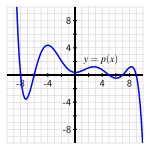Figure5.2.3.Gráfico de una función polinómica de grado \(7\)\(p\text{.}\)
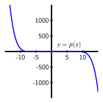Figure5.2.4.Gráfico de la misma función polinómica de grado \(7\)\(p\text{,}\) pero con zoom hacia afuera.
Finalmente, una idea clave del cálculo justifica el hecho de que el número máximo de puntos de inflexión de un polinomio de grado \(n\) es \(n-1\text{,}\) como conjeturamos en el caso de grado \(4\) en Preview Activity 5.2.1. Además, los únicos números posibles de puntos de inflexión deben tener la misma paridad que \(n-1\text{;}\) es decir, si \(n-1\) es par, entonces el número de puntos de inflexión debe ser par, y si en cambio \(n-1\) es impar, el número de puntos de inflexión también debe ser impar. Por ejemplo, para el polinomio de grado \(7\) en Figure 5.2.3, sabemos que tiene forma de silla, con un extremo hacia arriba y otro hacia abajo. Podría haber cero puntos de inflexión y la función podría siempre disminuir. Pero si hay al menos uno, entonces debe haber un segundo, ya que si solo hubiera uno, la función disminuiría y luego aumentaría sin volver a girar, lo que obligaría a que el gráfico pareciera en forma de U.
Los puntos de inflexión de un polinomio.
Para cualquier polinomio de grado \(n\)\(p(x) = a_0 + a_1 x + \cdots + a_{n-1}x^{n-1} + a_n x^n\text{,}\) si \(n\) es par, su número de puntos de inflexión es exactamente uno de \(n-1\text{,}\)\(n-3\text{,}\)\(\ldots\text{,}\)\(1\text{,}\) y si \(n\) es impar, su número de puntos de inflexión es exactamente uno de \(n-1\text{,}\)\(n-3\text{,}\)\(\ldots\text{,}\)\(0\text{.}\)
Activity5.2.2.
Experimentando con coeficientes en Desmos, encuentra una fórmula para una función polinómica que tenga las propiedades indicadas, o explica por qué no existe tal polinomio. (Si ingresas p(x)=a+bx+cx^2+dx^3+fx^4+gx^5 en Desmos 3
Omitimos usar e como una de las constantes ya que Desmos reserva e como la constante de Euler.
, se te pedirá que agregues deslizadores que facilitan explorar un polinomio de grado \(5\text{.}\))
Un polinomio \(p\) de grado \(5\) con exactamente \(3\) ceros reales, \(4\) puntos de inflexión, y tal que \(\lim_{x \to -\infty} p(x) = +\infty\) y \(\lim_{x \to \infty} p(x) = -\infty\text{.}\)
Un polinomio \(p\) de grado \(4\) con exactamente \(4\) ceros reales, \(3\) puntos de inflexión, y tal que \(\lim_{x \to -\infty} p(x) = +\infty\) y \(\lim_{x \to \infty} p(x) = -\infty\text{.}\)
Un polinomio \(p\) de grado \(6\) con exactamente \(2\) ceros reales, \(3\) puntos de inflexión, y tal que \(\lim_{x \to -\infty} p(x) = -\infty\) y \(\lim_{x \to \infty} p(x) = -\infty\text{.}\)
Un polinomio \(p\) de grado \(5\) con exactamente \(5\) ceros reales, \(3\) puntos de inflexión, y tal que \(\lim_{x \to -\infty} p(x) = +\infty\) y \(\lim_{x \to \infty} p(x) = -\infty\text{.}\)
Subsection5.2.2Usando ceros y signos para entender el comportamiento de los polinomios
Así como una función cuadrática puede escribirse en diferentes formas (estándar: \(q(x) = ax^2 + bx + c\text{,}\) vértice: \(q(x) = a(x-h)^2 + k\text{,}\) y factorizada: \(q(x) = a(x-r_1)(x-r_2)\)), es posible escribir una función polinómica en diferentes formas y obtener información sobre su comportamiento a partir de esas diferentes formas. En particular, si conocemos todos los ceros de una función polinómica, podemos escribir su fórmula en forma factorizada, lo que nos da una comprensión más profunda de su gráfica.
La Propiedad del Producto Cero establece que si dos o más números se multiplican y el resultado es \(0\text{,}\) entonces al menos uno de los números debe ser \(0\text{.}\) Usamos la Propiedad del Producto Cero regularmente con funciones polinómicas. Si podemos determinar todos los \(n\) ceros de un polinomio de grado \(n\text{,}\) y llamamos a esos ceros \(r_1\text{,}\)\(r_2\text{,}\)\(\ldots\text{,}\)\(r_n\text{,}\) podemos escribir
Además, si se nos da un polinomio en esta forma factorizada, podemos determinar rápidamente sus ceros. Por ejemplo, si \(p(x) = 2(x+7)(x+1)(x-2)(x-5)\text{,}\) sabemos que la única forma en que \(p(x) = 0\) es si al menos uno de los factores \((x+7)\text{,}\)\((x+1)\text{,}\)\((x-2)\text{,}\) o \((x-5)\) es igual a \(0\text{,}\) lo que implica que \(x = -7\text{,}\)\(x = -1\text{,}\)\(x = 2\text{,}\) o \(x = 5\text{.}\) Por lo tanto, a partir de la forma factorizada de un polinomio, es sencillo identificar los ceros del polinomio, los valores de \(x\) en los que su gráfica cruza el eje \(x\text{.}\) También podemos usar la forma factorizada de un polinomio para desarrollar lo que llamamos un diagrama de signos, que demostramos en Ejemplo 5.2.5.
Example5.2.5.
Considera la función polinómica \(p(x) = k(x-1)(x-a)(x-b)\text{.}\) Supón que sabemos que \(1 \lt a \lt b\) y que \(k \lt 0\text{.}\) Describe completamente la gráfica de \(p\) sin la ayuda de una utilidad de graficación.
Solution.
Dado que \(p(x) = k(x-1)(x-a)(x-b)\text{,}\) sabemos inmediatamente que \(p\) es un polinomio de grado \(3\) con \(3\) ceros reales: \(x = 1, a, b\text{.}\) Se nos da que \(1 \lt a \lt b\) y además que \(k \lt 0\text{.}\) Si expandimos la forma factorizada de \(p(x)\text{,}\) tiene la forma \(p(x) = kx^3 + \cdots\text{,}\) y dado que sabemos que cuando hacemos zoom out, \(p(x)\) se comporta como \(kx^3\text{,}\) sabemos que con \(k \lt 0\) se sigue que \(\lim_{x \to -\infty} p(x) = +\infty\) y \(\lim_{x \to \infty} p(x) = -\infty\text{.}\)
Dado que \(p\) es de grado \(3\) y sabemos que tiene ceros en \(x = 1, a, b,\) sabemos que no hay otras ubicaciones donde \(p(x) = 0\text{.}\) Por lo tanto, en cualquier intervalo entre dos ceros (o a la izquierda del menor o a la derecha del mayor), el polinomio no puede cambiar de signo. Ahora investigamos, intervalo por intervalo, el signo de la función.
Cuando \(x \lt 1\text{,}\) se sigue que \(x - 1 \lt 0\text{.}\) Además, dado que \(1 \lt a \lt b\text{,}\) cuando \(x \lt 1\text{,}\)\(x\) se encuentra a la izquierda de \(1\text{,}\)\(a\text{,}\) y \(b\text{,}\) lo que también hace que \(x-a\) y \(x-b\) sean negativos. Además, sabemos que la constante \(k \lt 0\text{.}\) Por lo tanto, en el intervalo \(x \lt 1\text{,}\) los cuatro términos en \(p(x) = k(x-1)(x-a)(x-b)\) son negativos, lo que indicamos escribiendo “\(----\)” en esa ubicación en el diagrama de signos mostrado en Figura 5.2.6.
Además, dado que hay un número par de términos negativos en el producto, el signo del producto total es positivo, lo que indicamos con el signo “\(+\)” debajo de “\(----\)”, y escribiendo “POS” debajo del eje de coordenadas.
Figure5.2.6.Un diagrama de signos para la función polinómica \(p(x) = k(x-1)(x-a)(x-b)\text{.}\)
Ahora procedemos a los otros intervalos creados por los ceros. En \(1 \lt x \lt a\text{,}\) el término \((x-1)\) se ha vuelto positivo, ya que \(x \gt 1\text{.}\) Pero tanto \(x-a\) como \(x-b\) son negativos, al igual que la constante \(k\text{,}\) y por lo tanto escribimos “\(-+--\)” para este intervalo, que tiene un signo general “\(-\)”, como se indica en la figura. Un razonamiento similar completa el diagrama.
De toda la información que hemos deducido sobre \(p\text{,}\) concluimos que independientemente de las ubicaciones de \(a\) y \(b\text{,}\) la gráfica de \(p\) debe parecerse a la curva mostrada en Figura 5.2.7.
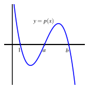
Figure5.2.7.La gráfica de la función polinómica \(p(x) = k(x-1)(x-a)(x-b)\text{.}\)
¿Cuál es el grado de \(p\text{?}\) ¿Cómo puedes saberlo sin expandir completamente la forma factorizada de la función?
¿Qué puedes decir sobre el signo del factor \((x^2 + 10000)\text{?}\)
¿Cuáles son los ceros del polinomio \(p\text{?}\)
Construye un diagrama de signos para \(p\) usando los ceros que identificaste en (c) y luego analizando el signo de cada factor de \(p\text{.}\)
Sin usar una utilidad de graficación, construye una gráfica aproximada de \(p\) que tenga los ceros de \(p\) cuidadosamente etiquetados en el eje \(x\text{.}\)
Usa una utilidad de graficación para verificar tu trabajo anterior. ¿Qué es desafiante o engañoso al usar tecnología para graficar \(p\text{?}\)
Subsection5.2.3Multiplicidad de ceros polinomiales
En Activity 5.2.3, encontramos que uno de los ceros del polinomio \(p(x) = 4692(x + 1520)(x^2 + 10000)(x - 3471)^2 (x - 9738)\) lleva a un comportamiento diferente de la función cerca de ese cero en comparación con otras situaciones que hemos visto. Ahora consideramos la situación más general donde un polinomio tiene un factor repetido de la forma \((x-r)^n\text{.}\) Cuando \((x-r)^n\) es un factor de un polinomio \(p\text{,}\) decimos que \(p\) tiene un cero de multiplicidad \(n\) en \(x = r\text{.}\)
Para ver el impacto de los factores repetidos, examinamos una colección de polinomios de grado \(4\) que tienen cada uno \(4\) ceros reales. Comenzamos con el más simple de todos, la función \(f(x) = x^4\text{,}\) cuyos ceros son \(x = 0, 0, 0, 0\text{.}\) Debido a que el factor “\(x-0\)” se repite \(4\) veces, el cero \(x = 0\) tiene multiplicidad \(4\text{.}\)
A continuación consideramos el polinomio de grado \(4\)\(g(x) = x^3 (x-1)\text{,}\) que tiene un cero de multiplicidad \(3\) en \(x = 0\) y un cero de multiplicidad \(1\) en \(x = 1\text{.}\)
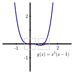
Figure5.2.8.Un gráfico de \(g(x) = x^3(x-1)\) con cero \(x = 0\) de multiplicidad \(3\) y \(x = 1\) de multiplicidad \(1\text{.}\)
Observa que en Figure 5.2.9, el gráfico de cerca cerca del cero \(x = 0\) de multiplicidad \(3\text{,}\) la función polinómica \(g\) se parece al polinomio cúbico básico \(-x^3\text{.}\) Además, en Figure 5.2.10, observamos que si hacemos un zoom aún mayor en el cero de multiplicidad \(1\text{,}\) la función \(g\) se ve aproximadamente lineal, como un polinomio de grado \(1\text{.}\) Este tipo de comportamiento cerca de ceros repetidos resulta ser válido en otros casos también.
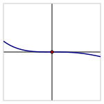Figure5.2.9.Un gráfico de \(g(x) = x^3(x-1)\) ampliado en el cero \(x = 0\) de multiplicidad \(3\text{.}\)
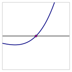Figure5.2.10.Un gráfico de \(g(x) = x^3(x-1)\) ampliado en el cero \(x = 1\) de multiplicidad \(1\text{.}\)
Si a continuación dejamos que \(h(x) = x^2 (x-1)^2\text{,}\) vemos que \(h\) tiene dos ceros reales distintos, cada uno de multiplicidad \(2\text{.}\) El gráfico de \(h\) en Figure 5.2.11 muestra que \(h\) se comporta de manera similar a una función cuadrática básica cerca de cada uno de esos ceros y, por lo tanto, muestra un comportamiento en forma de U cerca. Si en cambio dejamos que \(k(x) = x^2(x-1)(x+1)\text{,}\) vemos un comportamiento aproximadamente lineal cerca de \(x = -1\) y \(x = 1\) (los ceros de multiplicidad \(1\)), y un comportamiento cuadrático (en forma de U) cerca de \(x = 0\) (el cero de multiplicidad \(2\)), como se ve en Figure 5.2.12.
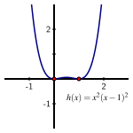Figure5.2.11.Gráfico de \(h(x) = x^2 (x-1)^2\) con ceros \(x = 0\) y \(x = 1\) de multiplicidad \(2\text{.}\)
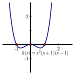Figure5.2.12.Gráfico de \(k(x) = x^2(x-1)(x+1)\) con ceros \(x = 0\) de multiplicidad \(2\) y \(x = -1\) y \(x = 1\) de multiplicidad \(1\text{.}\)
Finalmente, si consideramos \(m(x) = (x+1)x(x-1)(x-2)\text{,}\) que tiene \(4\) ceros reales distintos cada uno de multiplicidad \(1\text{,}\) observamos en Figure 5.2.13 que al hacer zoom en cada cero individualmente, la función demuestra un comportamiento aproximadamente lineal al pasar por el eje \(x\text{.}\)
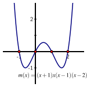
Figure5.2.13.Gráfico de \(m(x) = (x+1)x(x-1)(x-2)\) con \(4\) ceros distintos de multiplicidad \(1\text{.}\)
Nuestras observaciones con polinomios de grado \(4\) en las diversas figuras anteriores se generalizan a polinomios de cualquier grado.
Ceros polinomiales de multiplicidad \(n\).
Si \((x-r)^n\) es un factor de un polinomio \(p\text{,}\) entonces \(x = r\) es un cero de \(p\) de multiplicidad \(n\text{,}\) y cerca de \(x = r\) el gráfico de \(p\) se parece a como lo hace \(-x^n\) o \(x^n\) cerca de \(x = 0\text{.}\) Es decir, la forma del gráfico cerca del cero está determinada por la multiplicidad del cero.
Activity5.2.4.
Para cada una de las siguientes indicaciones, intenta determinar una fórmula para un polinomio que satisfaga los criterios dados. Si no existe tal polinomio, explica por qué.
Un polinomio \(f\) de grado \(10\) cuyos ceros son \(x = -12\) (multiplicidad \(3\)), \(x = -9\) (multiplicidad \(2\)), \(x = 4\) (multiplicidad \(4\)), y \(x = 10\) (multiplicidad \(1\)), y \(f\) satisface \(f(0) = 21\text{.}\) ¿Qué puedes decir sobre los valores de \(\lim_{x \to -\infty} f(x)\) y \(\lim_{x \to \infty} f(x)\text{?}\)
Un polinomio \(p\) de grado \(9\) que satisface \(p(0) = -2\) y tiene el gráfico mostrado en Figure 5.2.14. Asume que todos los ceros de \(p\) se muestran en la figura.
Un polinomio \(q\) de grado \(8\) con \(3\) ceros reales distintos (posiblemente de diferentes multiplicidades) tal que \(q\) tiene el gráfico de signos en Figure 5.2.15 y satisface \(q(0) = -10\text{.}\)
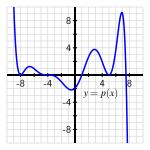Figure5.2.14.Un polinomio \(p\text{.}\)
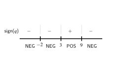Figure5.2.15.Un gráfico de signos para el polinomio \(q\text{.}\)
Un polinomio \(q\) de grado \(9\) con \(3\) ceros reales distintos (posiblemente de diferentes multiplicidades) tal que \(q\) satisface el gráfico de signos en Figure 5.2.15 y satisface \(q(0) = -10\text{.}\)
Un polinomio \(p\) de grado \(11\) que satisface \(p(0) = -2\) y \(p\) tiene el gráfico mostrado en Figure 5.2.14. Asume que todos los ceros de \(p\) se muestran en la figura.
Subsection5.2.4Resumen
De la estructura algebraica de una función polinómica, podemos deducir varios rasgos clave de la función.
sabemos que su grado es \(n\) y que cuando hacemos zoom hacia afuera, \(p\) se parece a \(a_n x^n\) y, por lo tanto, tiene el mismo comportamiento a largo plazo que \(a_n x^n\text{.}\) Así, \(p\) tiene forma de silla si \(n\) es impar y forma de U si \(n\) es par. Si \(\lim_{n \to \infty} p(x)\) es \(+\infty\) o \(-\infty\) depende del signo de \(a_n\text{.}\)
(donde los \(r_i\) posiblemente no son distintos y posiblemente complejos), podemos determinar rápidamente tanto el grado del polinomio (\(n\)) como las ubicaciones de sus ceros, así como sus multiplicidades.
Un gráfico de signos es una forma visual de identificar todas las ubicaciones donde una función es cero junto con el signo de la función en los varios intervalos que crean los ceros. Un gráfico de signos nos da una idea general del gráfico de la función, pero sin preocuparnos por ningún valor específico de la función además de los ceros. Para un ejemplo de gráfico de signos, ve Figure 5.2.6.
Cuando un polinomio \(p\) tiene un factor repetido como
decimos que \(x = 5\) es un cero de multiplicidad \(3\text{.}\) En el punto \(x = 5\) donde \(p\) cruzará el eje \(x\text{,}\) de cerca se verá como un polinomio cúbico y, por lo tanto, tendrá forma de silla. En general, si \((x-r)^n\) es un factor de un polinomio \(p\) de modo que \(x = r\) es un cero de multiplicidad \(n\text{,}\) el polinomio se comportará cerca de \(x = r\) como el polinomio \(x^n\) se comporta cerca de \(x = 0\text{.}\)
¿Cuáles son los ceros reales de \(p\text{?}\) Indícalos con su multiplicidad.
Construye un gráfico de signos cuidadosamente etiquetado para \(p(x)\text{.}\)
Grafica la función \(p\) en Desmos. ¿Son obvios los ceros en el gráfico? ¿Cómo tienes que ajustar la ventana para poder verlos? Incluso en una ventana ajustada, ¿puedes identificarlos exactamente desde el gráfico?
Ahora considera el polinomio relacionado pero diferente
¿Cuál es el grado de \(q\text{?}\) ¿Cuáles son los ceros de \(q\text{?}\) ¿Qué es obvio en su gráfico y qué no lo es?
2.
Considera la función (no polinómica) \(r(x) = e^{-x^2}(x^2+1)(x-2)(x-3)\text{.}\)
¿Cuáles son los ceros de \(r(x)\text{?}\) (Pista: ¿es \(e^{\Box}\) alguna vez igual a cero?)
Construye un gráfico de signos para \(r(x)\text{.}\)
Grafica \(r(x)\) en Desmos. ¿Es obvio el signo y el comportamiento general de \(r\) en el gráfico? ¿Por qué o por qué no?
A partir del gráfico, ¿cuál parece ser el valor de \(\lim_{x \to \infty} r(x)\text{?}\) ¿Por qué es esto sorprendente a la luz del comportamiento de \(f(x)=(x^2+1)(x-2)(x-3)\) cuando \(x \to \infty\text{?}\)
3.
En cada una de las siguientes preguntas, encuentra una fórmula para un polinomio con ciertas propiedades, genera un gráfico que demuestre que has encontrado una función con las especificaciones dadas y escribe varias oraciones para explicar tu razonamiento.
Una función cuadrática \(q\) tiene ceros en \(x = −7\) y \(x = 11\) y su valor de \(y\) en su vértice es \(42\text{.}\)
Un polinomio \(r\) de grado \(4\) tiene ceros en \(x = −3\) y \(x = 5\text{,}\) ambos de multiplicidad \(2\text{,}\) y la función tiene una intersección con el eje \(y\) en el punto \((0, 28)\text{.}\)
Un polinomio \(f\) tiene grado \(11\) y los siguientes ceros: ceros de multiplicidad \(1\) en \(x = −3\) y \(x = 5\text{,}\) ceros de multiplicidad \(2\) en \(x = −2\) y \(x = 3\text{,}\) y un cero de multiplicidad \(3\) en \(x = 1\text{.}\) Además, \(\lim_{x \to \infty} f(x) = -\infty\text{.}\)
Un polinomio \(g\) tiene su gráfico dado en Figura 5.2.16 abajo. Determina una posible fórmula para \(g(x)\) donde el polinomio que encuentres tenga el grado más bajo posible para coincidir con el gráfico. ¿Cuál es el grado de la función que encuentras?
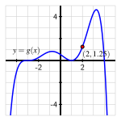
Figure5.2.16.Una función polinómica \(g\text{.}\)
4.
Así como hemos trabajado para entender familias de funciones que involucran parámetros como \(p(t) = a\cos(k(t-b)) + c\) y \(F(t) = a + be^{-kt}\text{,}\) a menudo estamos interesados en polinomios que involucran uno o más parámetros y en entender cómo esos parámetros afectan el comportamiento de la función.
Por ejemplo, sea \(a \gt 0\) una constante positiva, y considera \(p(x) = x^3 - a^2x\text{.}\)
¿Cuál es el grado de \(p\text{?}\)
¿Cuál es el comportamiento a largo plazo de \(p\text{?}\) Indica tus respuestas usando notación de límites.
En términos de la constante \(a\text{,}\) ¿cuáles son los ceros de \(p\text{?}\)
Construye un gráfico de signos cuidadosamente etiquetado para \(p\text{.}\)
¿Cómo afecta el cambio del valor de \(a\) al gráfico de \(p\text{?}\)